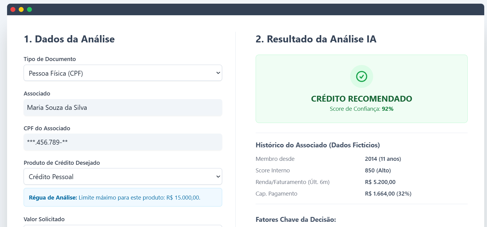

Synapse (Go!Coop)
Plataforma de inteligência de dados focada em análise de crédito para cooperativismo. Projeto vencedor do programa de inovação Go!Coop.
Python
Data Intelligence
IA/ML
Analista de Sistemas / Desenvolvedor
Eu transformo dados em decisões estratégicas e otimizo processos através da automação. Com especialização em análise de dados, machine learning e desenvolvimento de soluções inteligentes, meu objetivo é entregar projetos que não apenas funcionam, mas que geram crescimento, eficiência e clareza para os negócios.

Plataforma de inteligência de dados focada em análise de crédito para cooperativismo. Projeto vencedor do programa de inovação Go!Coop.
Desenvolvimento de uma plataforma web completa para recomendação de serviços, unindo back-end robusto e front-end moderno.

Criação de dashboards interativos e planilhas automatizadas para projeção financeira, análise de cenários e identificação de tendências.